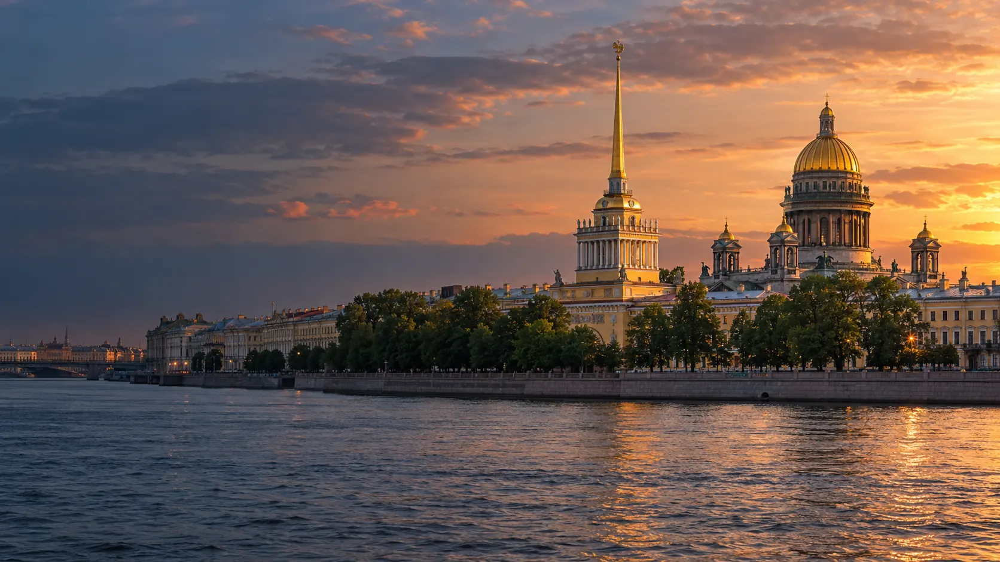

Центр «Адмиралтейский»
Клуб юных моряков «Адмиралтеец»
Псковская ул., д. 14
Смотреть площадку
Клубы и площадки района
Ищи клуб по названию, адресу, направлению или учреждению. В списке две организации и 26 площадок.
Найти клубКаталог района
Показано 26 площадок
Загружаем карту клубов…
Предварительные координаты: © OpenStreetMap contributors.
Псковская ул., д. 14
Смотреть площадкуНаб. реки Мойки, д. 112
Смотреть площадкуПер. Макаренко, д. 9
Смотреть площадкуНаб. канала Грибоедова, д. 106
Смотреть площадку3-я Красноармейская ул., д. 14, лит. А
Смотреть площадкуПер. Макаренко, д. 9
Смотреть площадкуИзмайловский пр., д. 18, лит. Б
Смотреть площадкуНаб. реки Мойки, д. 110, лит. А
Смотреть площадку3-я Красноармейская ул., д. 14
Смотреть площадкуГороховая ул., д. 57, лит. А
Смотреть площадку12-я Красноармейская ул., д. 14-16, лит. А
Смотреть площадкуПер. Бойцова, д. 8
Смотреть площадкуСадовая ул., д. 125, лит. Б
Смотреть площадкуНаб. реки Фонтанки, д. 150, лит. А
Смотреть площадкуГалерная ул., д. 52
Смотреть площадкуНаб. реки Фонтанки, д. 136, лит. А
Смотреть площадку4-я Красноармейская ул., д. 11, лит. А
Смотреть площадкуРузовская ул., д. 25
Смотреть площадку12-я Красноармейская ул., д. 5
Смотреть площадкуБольшая Подьяческая ул., д. 13
Смотреть площадкуПсковская ул., д. 14
Смотреть площадкуул. Розенштейна, д. 1
Смотреть площадкуСерпуховская ул., д. 26-28
Смотреть площадкуНаб. реки Фонтанки, д. 92
Смотреть площадкуНаб. реки Фонтанки, д. 133
Смотреть площадкуСадовая ул., д. 55-57, лит. А
Смотреть площадкуНичего не нашлось. Попробуй другое название или фильтр.
Контакты учреждения
Верейская ул., д. 22-24
(812) 246-39-87
Контакты учреждения
Садовая ул., д. 55-57, лит. А
246-58-80; 246-58-82
Список клубов, адреса, телефоны и направления собраны с официальной страницы Администрации Адмиралтейского района. Дата изменения страницы: 18.04.2025; это дата источника, а не проверка каждой площадки. Городская база учреждений указывает для PDF Центра «Адмиралтейский» дату загрузки 01.06.2026, но содержимое документа по этой ссылке не совпало с названием учреждения. Поэтому карточки пока перенесены со страницы администрации района от 18.04.2025. Перед посещением уточняй данные у организаторов.